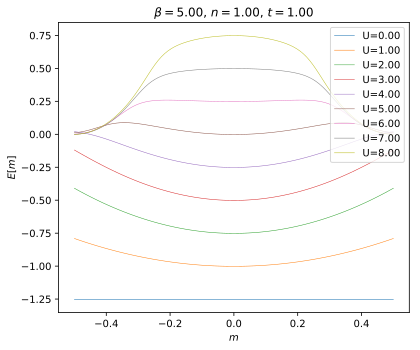
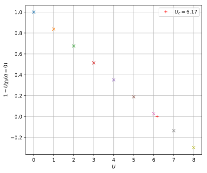
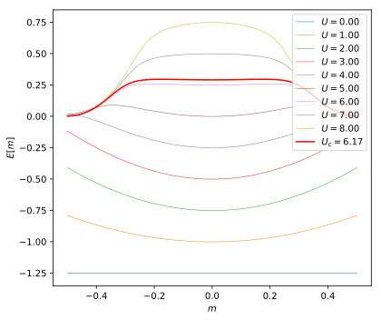
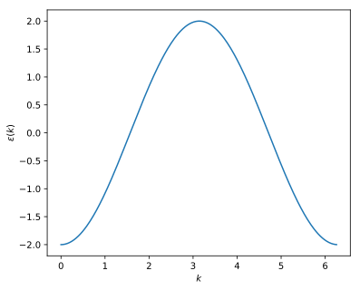
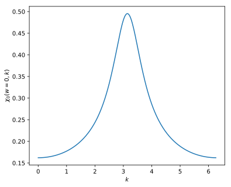
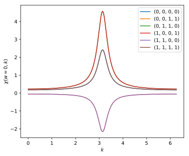
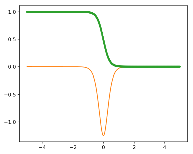

Mean field and RPA response for the one dimensional Hubbard model.¶
Comparing numerical calculation with rank 4 tensor and analytical results from Fazekas (Ch. 7.4)
Author: Hugo U. R. Strand (2018)
Consider the one dimensional Hubbard model with nearest neighbour hopping
\[H = -t \sum_{i\sigma} (c^\dagger_{i\sigma} c_{i+1\sigma} + c^\dagger_{i+1\sigma} c_{i\sigma} ) + U \sum_{i} \hat{n}_{i\uparrow} \hat{n}_{i\downarrow}\]
The non-interacting momentum space dispersion is \(\epsilon(k) = -2t \cos k\).
Mean-field decoupling¶
\[\hat{n}_\sigma = \delta\hat{n}_\sigma + n_\sigma\]
\[n_\sigma = \langle \hat{n}_\sigma \rangle = \frac{n}{2} \pm m\]
\[\hat{n}_{\uparrow} \hat{n}_{\downarrow}
=
\delta\hat{n}_\uparrow
\delta\hat{n}_\downarrow
+
\big(\frac{n}{2} - m\big) \hat{n}_\uparrow
+
\big(\frac{n}{2} + m\big) \hat{n}_\downarrow
- \frac{n^2}{4} + m^2\]
neglecting fluctuations
\[H_{MF} =
\sum_{k\sigma} \Big[ \epsilon(k) + \frac{U}{2}n \mp Um \Big] c^\dagger_{k\sigma} c_{k\sigma}
- U \Big( \frac{n^2}{4} - m^2 \Big)\]
\[E[n, m] =
\sum_\sigma
\int_{-\pi}^{\pi} \frac{dk}{2\pi}
\tilde{\epsilon}_\sigma(k) f(\tilde{\epsilon}_\sigma(k))
- U \Big( \frac{n^2}{4} - m^2 \Big)\]
with \(\tilde{\epsilon}_\sigma(k) = \epsilon(k) + \frac{U}{2}n \mp Um\)
[17]:
def get_total_energy_mf_ref(t, beta, U, mu, n, m):
def disp(k, U, n, m, s):
return -2*t * np.cos(k) - s*U*m + 0.5*U*n
def integrand(k, U, mu, n, m, s):
e = disp(k, U, n, m, s)
f = 1./( np.exp(beta * (e - mu)) + 1 )
return e * f
E_kin_up, err = quad(integrand, -np.pi, np.pi, args=(U, mu, n, m, +1.))
E_kin_do, err = quad(integrand, -np.pi, np.pi, args=(U, mu, n, m, -1.))
E_kin = E_kin_up + E_kin_do
k_vol = 2*np.pi
E_kin *= 1. / k_vol
E_tot = E_kin - U*(0.25*n**2 - m**2)
return E_tot
[120]:
t = 1.0
beta = 5.0
n = 1.0
U_vec = np.array([0., 1., 2., 3., 4., 5., 6., 7., 8.])
m_vec = np.linspace(-0.5, 0.5, num=100)
for U in U_vec:
mu = 0.5*U
E_vec = np.array(
[ get_total_energy_mf_ref(t, beta, U, mu, n, m)
for m in m_vec ])
plt.plot(m_vec, E_vec, '-', lw=0.5, label='U=%2.2f' % U)
plt.title(r'$\beta=%2.2f$, $n=%2.2f$, $t=%2.2f$' % (beta, n, t))
plt.xlabel(r'$m$')
plt.ylabel(r'$E[m]$')
plt.legend(loc='upper right')
plt.tight_layout()

Analytic susceptibility¶
Density of states
\[\rho(\epsilon) = \frac{1}{2t \pi} \frac{1}{ \sqrt{1 - \epsilon^2/(2t)^2 }}\]
\(f(\epsilon) = [e^{\beta \epsilon} + 1]^{-1}\),
\[\partial_\epsilon f(\epsilon) = -\frac{\beta}{4 \cosh^2(\beta \epsilon/2) }\]
\[\chi_0(k=0) =
- \int_{-2t}^{2t} d\epsilon \rho(\epsilon) \partial_\epsilon f(\epsilon)\]
Instability rule
\[1 - U \chi_0(k=0) = 0\]
\[\chi = \frac{1}{2} \frac{\chi_0}{1 - U \chi_0}\]
[34]:
def get_density_of_states(eps, t):
return 1./np.sqrt(1. - (eps/(2*t))**2) / (2*t * np.pi)
def fermi_distribution(beta, eps):
return 1./(np.exp(beta*eps) + 1.)
def fermi_distribution_derivative(beta, eps):
return -beta/4. / np.cosh(0.5*beta*eps)**2
def chi0_q0_integral(t, beta):
def integrand(eps):
rho = get_density_of_states(eps, t)
df = fermi_distribution_derivative(beta, eps)
return -rho * df
chi0_q0, err = quad(integrand, -2.*t, 2.*t)
return chi0_q0
def find_Uc(t, beta):
def root_function(U):
chi0_q0 = chi0_q0_integral(t, beta)
return 1 - U * chi0_q0
Uc = brentq(root_function, 0, 100.)
return Uc
[36]:
t = 1.0
beta = 5.0
U_vec = np.array([0., 1., 2., 3., 4., 5., 6., 7., 8.])
for U in U_vec:
chi0_q0 = chi0_q0_integral(t, beta)
plt.plot(U, 1 - chi0_q0 * U, 'x')
Uc = find_Uc(t, beta)
plt.plot(Uc, 0., '+r', label=r'$U_c=%2.2f$' % Uc)
plt.ylabel(r'$1 - U \chi_0(q=0)$')
plt.xlabel(r'$U$')
plt.legend()
plt.grid()
plt.tight_layout()

[38]:
t = 1.0
beta = 5.0
n = 1.0
U_vec = np.array([0., 1., 2., 3., 4., 5., 6., 7., 8.])
m_vec = np.linspace(-0.5, 0.5, num=100)
for U in U_vec:
mu = 0.5*U
E_vec = np.array(
[ get_total_energy_mf_ref(t, beta, U, mu, n, m)
for m in m_vec ])
plt.plot(m_vec, E_vec, '-', lw=0.5, label=r'$U=%2.2f$' % U)
mu = 0.5*Uc
E_vec = np.array(
[ get_total_energy_mf_ref(t, beta, Uc, mu, n, m)
for m in m_vec ])
plt.plot(m_vec, E_vec, 'r-', lw=1.5, label=r'$U_c=%2.2f$' % Uc)
plt.xlabel(r'$m$')
plt.ylabel(r'$E[m]$')
plt.legend(loc='upper right')
plt.tight_layout()

TPRF tensor valued calculation¶
[122]:
t = 1.0
#U = 6.1
U = 1.8
mu = 0.5*U
m = 0.0
n = 1.0
h_loc = -U*m*np.diag([+1., -1.]) + (0.5*U*n - mu) * np.eye(2)
T = - t * np.eye(2)
from triqs_tprf.tight_binding import TBLattice
t_r = TBLattice(
units = [(1, 0, 0)],
hopping = {
# nearest neighbour hopping -t
(0,): h_loc,
(+1,): T,
(-1,): T,
},
orbital_positions = [(0,0,0)] * 2,
orbital_names = ['up', 'do'],
)
e_k = t_r.on_mesh_brillouin_zone(n_k=(256, 1, 1))
[123]:
k_vec, e_vec = np.array([ [k.value[0], e_k[k][0,0]] for k in e_k.mesh ]).T
plt.plot(k_vec, e_vec, '-')
plt.xlabel(r'$k$')
plt.ylabel(r'$\epsilon(k)$');

[131]:
nw = 400
beta = 5.0
from triqs.gf import MeshImFreq, Idx
wmesh = MeshImFreq(beta=beta, S='Fermion', n_max=nw)
from triqs_tprf.lattice import lattice_dyson_g0_wk
g0_wk = lattice_dyson_g0_wk(mu=0., e_k=e_k, mesh=wmesh)
from triqs_tprf.lattice_utils import imtime_bubble_chi0_wk
chi00_wk = imtime_bubble_chi0_wk(g0_wk, nw=1)
print()
print('chi0_q0 =\n', chi00_wk[Idx(0), Idx(0, 0, 0)].real.reshape((4,4)))
print()
import itertools
for idxs in itertools.product(list(range(2)), repeat=4):
print(idxs, chi00_wk[Idx(0), Idx(0, 0, 0)].real[idxs])
chi0_q0_ref = chi0_q0_integral(t, beta)
print()
print('chi0_q0 =', chi00_wk[Idx(0), Idx(0, 0, 0)][0,0,0,0].real)
print('chi0_q0_ref =', chi0_q0_ref)
╔╦╗╦═╗╦╔═╗ ╔═╗ ┌┬┐┌─┐┬─┐┌─┐
║ ╠╦╝║║═╬╗╚═╗ │ ├─┘├┬┘├┤
╩ ╩╚═╩╚═╝╚╚═╝ ┴ ┴ ┴└─└
Two-Particle Response Function tool-box
beta = 5.0
nk = 256
nw = 800
norb = 2
Approx. Memory Utilization: 0.06 GB
--> fourier_wk_to_wr
--> fourier_wr_to_tr
--> chi0_w0r_from_grt_PH (bubble in tau & r)
--> chi_wk_from_chi_wr (r->k)
chi0_q0 =
[[0.16215903 0. 0. 0. ]
[0. 0. 0.16215903 0. ]
[0. 0.16215903 0. 0. ]
[0. 0. 0. 0.16215903]]
(0, 0, 0, 0) 0.16215902618552902
(0, 0, 0, 1) 0.0
(0, 0, 1, 0) 0.0
(0, 0, 1, 1) 0.0
(0, 1, 0, 0) 0.0
(0, 1, 0, 1) 0.0
(0, 1, 1, 0) 0.16215902618552902
(0, 1, 1, 1) 0.0
(1, 0, 0, 0) 0.0
(1, 0, 0, 1) 0.16215902618552902
(1, 0, 1, 0) 0.0
(1, 0, 1, 1) 0.0
(1, 1, 0, 0) 0.0
(1, 1, 0, 1) 0.0
(1, 1, 1, 0) 0.0
(1, 1, 1, 1) 0.16215902618552902
chi0_q0 = 0.16215902618552902
chi0_q0_ref = 0.162159026185
[125]:
k_vec, chi0_vec = np.array([ [k.value[0], chi00_wk[Idx(0), k][0,0,0,0]] for k in e_k.mesh ]).T
plt.plot(k_vec, chi0_vec, '-')
plt.xlabel(r'$k$')
plt.ylabel(r'$\chi_0(w=0, k)$');

[126]:
gf_struct = [[0, [0, 1]]]
from triqs.operators import n, c, c_dag, Operator, dagger
H_int = U * n(0, 0) * n(0, 1)
print('H_int =', H_int)
from triqs_tprf.rpa_tensor import get_rpa_tensor
from triqs_tprf.rpa_tensor import fundamental_operators_from_gf_struct
fundamental_operators = fundamental_operators_from_gf_struct(gf_struct)
print(fundamental_operators)
U_abcd = get_rpa_tensor(H_int, fundamental_operators)
print()
print('U_abcd =\n', U_abcd.reshape((4, 4)))
print()
import itertools
for idxs in itertools.product(list(range(2)), repeat=4):
print(idxs, U_abcd[idxs])
H_int = 1.8*c_dag(0,0)*c_dag(0,1)*c(0,1)*c(0,0)
[1*c(0,0), 1*c(0,1)]
U_abcd =
[[ 0. +0.j 0. +0.j 0. +0.j -1.8+0.j]
[ 0. +0.j 0. +0.j 1.8+0.j 0. +0.j]
[ 0. +0.j 1.8+0.j 0. +0.j 0. +0.j]
[-1.8+0.j 0. +0.j 0. +0.j 0. +0.j]]
(0, 0, 0, 0) 0j
(0, 0, 0, 1) 0j
(0, 0, 1, 0) 0j
(0, 0, 1, 1) (-1.8+0j)
(0, 1, 0, 0) 0j
(0, 1, 0, 1) 0j
(0, 1, 1, 0) (1.8+0j)
(0, 1, 1, 1) 0j
(1, 0, 0, 0) 0j
(1, 0, 0, 1) (1.8+0j)
(1, 0, 1, 0) 0j
(1, 0, 1, 1) 0j
(1, 1, 0, 0) (-1.8+0j)
(1, 1, 0, 1) 0j
(1, 1, 1, 0) 0j
(1, 1, 1, 1) 0j
[130]:
from triqs_tprf.lattice import solve_rpa_PH
chi_wk = solve_rpa_PH(chi00_wk, U_abcd)
print('chi_q0 =\n', chi_wk[Idx(0), Idx(0, 0, 0)].real.reshape((4,4)))
print()
for idxs in itertools.product(list(range(2)), repeat=4):
print(idxs, chi_wk[Idx(0), Idx(0, 0, 0)][idxs].real)
Sz = 0.5 * np.diag([+1., -1.])
chi_SzSz_wk = chi_wk[0,0,0,0].copy()
chi_SzSz_wk.data[:] = np.einsum('wkabcd,ab,cd->wk', chi_wk.data, Sz, Sz)
print()
print('chi_SzSz_q0 =', chi_SzSz_wk[Idx(0), Idx(0, 0, 0)].real)
# Eq. 7.43 Fazekas (additional 0.5 factor)
chi_q0_ref = 0.5 * chi0_q0_ref / (1. - U*chi0_q0_ref)
print('chi_q0_ref =', chi_q0_ref)
C = chi0_q0_ref
print()
print('C/(1-UC) =', C/(1.-U*C))
print('C/(1-U^2C^2) =', C/(1.-U*U*C*C))
print('UC*C/(1-U^2C^2) =', U*C*C/(1.-U*U*C*C))
chi_q0 =
[[ 0.17726126 0. 0. -0.05174012]
[ 0. 0. 0.22900138 0. ]
[ 0. 0.22900138 0. 0. ]
[-0.05174012 0. 0. 0.17726126]]
(0, 0, 0, 0) 0.1772612564906984
(0, 0, 0, 1) 0.0
(0, 0, 1, 0) 0.0
(0, 0, 1, 1) -0.05174012291931889
(0, 1, 0, 0) 0.0
(0, 1, 0, 1) 0.0
(0, 1, 1, 0) 0.22900137941001733
(0, 1, 1, 1) 0.0
(1, 0, 0, 0) 0.0
(1, 0, 0, 1) 0.22900137941001733
(1, 0, 1, 0) 0.0
(1, 0, 1, 1) 0.0
(1, 1, 0, 0) -0.05174012291931889
(1, 1, 0, 1) 0.0
(1, 1, 1, 0) 0.0
(1, 1, 1, 1) 0.1772612564906984
chi_SzSz_q0 = 0.11450068970500865
chi_q0_ref = 0.114500689705
C/(1-UC) = 0.229001379409
C/(1-U^2C^2) = 0.17726125649
UC*C/(1-U^2C^2) = 0.0517401229191
[128]:
for idxs in itertools.product(list(range(2)), repeat=4):
k_vec, chi_vec = np.array([ [k.value[0], chi_wk[Idx(0), k][idxs]] for k in e_k.mesh ]).T
if np.max(np.abs(chi_vec)) == 0.:
continue
plt.plot(k_vec, chi_vec, '-', label=idxs.__repr__())
plt.legend()
plt.xlabel(r'$k$')
plt.ylabel(r'$\chi(w=0, k)$');

\[\frac{1}{1 + x} = \sum_k (-x)^k\]
\[e^x = \sum_k \frac{(-1)^k}{k!} x^k\]
\[f(\epsilon) = \frac{1}{e^{\beta \epsilon} + 1}
= \sum_k (-1)^k e^{k \beta \epsilon}
= \sum_k (-1)^k \sum_l \frac{(-1)^l}{l!} (k \beta \epsilon)^l\]
\[f( e \mathbf{1} + \eta \sigma_x )\]
special case \([\mathbf{1}, \sigma_x] = 0\), anything commutes with \(\mathbf{1}\)!
Q: \([A, B] = 0\)?
Want
\[\lim_{\eta \rightarrow 0}
\frac{ f( A + \eta B ) - f(A) } { \eta } ?=? B f'(A)\]
in the general case \([A , B] \ne 0\)
No what we want is slightly less general \(A = A^\dagger\) and \(B = B^\dagger\) and \(B\) has only two non-zero terms that are unity.
[165]:
def chi0_q0_integral_kspace(t, beta):
def disp(k, t):
return -2.* t * np.cos(k)
def integrand(k, t, beta):
ek = disp(k, t)
val = - fermi_distribution_derivative(beta, ek)
return val
chi0_q0, err = quad(integrand, -np.pi, np.pi, args=(t, beta))
chi0_q0 *= 1./(2.*np.pi)
return chi0_q0
def fdm(E, beta):
from scipy.linalg import expm
I = np.eye(E.shape[0])
return np.mat(np.linalg.inv(expm(beta * E) + I))
def dfdm(E, beta):
from scipy.linalg import coshm
B = np.mat(coshm(0.5*beta*E))
return -0.25 * beta * np.mat(np.linalg.inv(B*B))
beta = 5.0
t = 1.0
chi0_q0_ref = chi0_q0_integral(t, beta)
chi0_q0_ref2 = chi0_q0_integral_kspace(t, beta)
print(chi0_q0_ref)
print(chi0_q0_ref2)
0.162159026185
0.162159026186
[166]:
e_vec = np.linspace(-5, 5, num=500)
f = np.array([fdm(np.array([[e]]), beta) for e in e_vec ])
df = np.array([dfdm(np.array([[e]]), beta) for e in e_vec ])
plt.plot(e_vec, np.squeeze(f))
plt.plot(e_vec, np.squeeze(df))
de = e_vec[1] - e_vec[0]
df_ref = 1 + np.cumsum(np.squeeze(df)) * de
plt.plot(e_vec, df_ref, '.')
[166]:
[<matplotlib.lines.Line2D at 0x111ae2e10>]

[168]:
E = 0.1 * np.mat(np.eye(2))
sx = np.mat(np.rot90(np.eye(2)))
print(E)
print(sx)
fdm(E, beta)
eta = 1e-9
df = (fdm(E + eta*sx, beta) - fdm(E, beta)) / eta
df_ref = dfdm(E, beta) * sx
print(type(df_ref))
print(df)
print(df_ref)
[[0.1 0. ]
[0. 0.1]]
[[0. 1.]
[1. 0.]]
<class 'numpy.matrixlib.defmatrix.matrix'>
[[ 0. -1.17501856]
[-1.17501856 0. ]]
[[ 0. -1.17501856]
[-1.17501856 0. ]]
[175]:
A = 0.1 * np.mat(np.random.random((4, 4)))
#B = np.mat(np.rot90(np.eye(4)))
B = np.zeros((4, 4))
B[0,0] = 1
print('A=\n', A)
print('B=\n', B)
print(fdm(A, beta))
eta = 1e-9
df = (fdm(A + eta*B, beta) - fdm(A - eta*B, beta)) / (2.*eta)
df_ref = dfdm(A, beta) * B - B * dfdm(A, beta)
#print type(df_ref)
print(df)
print(df_ref)
A=
[[0.05986393 0.09252033 0.07315558 0.01563585]
[0.0182822 0.05974364 0.09080281 0.06603175]
[0.09540358 0.06777702 0.07709171 0.0380558 ]
[0.03776486 0.05132797 0.04983329 0.07266601]]
B=
[[1. 0. 0. 0.]
[0. 0. 0. 0.]
[0. 0. 0. 0.]
[0. 0. 0. 0.]]
[[ 0.43270332 -0.10646747 -0.08126425 -0.01311808]
[-0.01567305 0.43419406 -0.1038736 -0.07632445]
[-0.11076694 -0.07412951 0.41535998 -0.04030009]
[-0.04102537 -0.05649209 -0.05385591 0.41473132]]
[[-1.18582577e+00 4.85918250e-02 5.12686976e-02 2.52372064e-02]
[ 3.11171870e-02 1.37789780e-03 6.11254103e-04 -4.33000857e-04]
[ 4.67458502e-02 1.77228579e-02 1.29125322e-02 1.31308159e-03]
[ 2.77547464e-02 6.06566533e-03 4.25150193e-03 2.20629071e-04]]
[[ 0. -0.10468123 -0.12056333 -0.06701196]
[ 0.08361562 0. 0. 0. ]
[ 0.09822362 0. 0. 0. ]
[ 0.06554954 0. 0. 0. ]]
[201]:
def chi0_q0_integral_kspace_matrix(idxs, t, beta):
def disp(k, t):
return -2.* t * np.cos(k) * np.array([[1.1, 0.1], [0.1, 0.9]])
def integrand(k, t, beta, idxs):
a, b, c, d = idxs
ek = disp(k, t)
# -- Field
F = np.zeros((2,2))
#F[a,b] = 1
F[b,a] = 1
eta = 1e-9
df = (fdm(ek + eta*F, beta) - fdm(ek - eta*F, beta)) / (2.*eta)
return -df[c, d]
chi0_q0, err = quad(integrand, -np.pi, np.pi, args=(t, beta, idxs))
chi0_q0 *= 1./(2.*np.pi)
return chi0_q0
beta, t = 5.0, 1.0
idxs_vec = [
(0, 0, 0, 0),
(0, 1, 0, 1),
(1, 0, 1, 0),
(0 ,1, 1, 0),
(1 ,0, 0, 1),
(1, 1, 1, 1),
]
chi0_q0 = np.zeros((2, 2, 2, 2))
#for idxs in idxs_vec:
for idxs in itertools.product(list(range(2)), repeat=4):
chi0_q0[idxs] = chi0_q0_integral_kspace_matrix(idxs, t, beta)
print(idxs, chi0_q0[idxs])
print()
print(chi0_q0.reshape((4, 4)))
(0, 0, 0, 0) 0.14793390983942026
(0, 0, 0, 1) -0.008038350082891664
(0, 0, 1, 0) -0.008038350017700799
(0, 0, 1, 1) 0.0006233689973519351
(0, 1, 0, 0) -0.00803835402874193
(0, 1, 0, 1) 0.000623370447305363
(0, 1, 1, 0) 0.16401061042857704
(0, 1, 1, 1) -0.00928508742243029
(1, 0, 0, 0) -0.008038353137584412
(1, 0, 0, 1) 0.16401061009292597
(1, 0, 1, 0) 0.0006233708712780279
(1, 0, 1, 1) -0.009285087431502552
(1, 1, 0, 0) 0.000623377300450557
(1, 1, 0, 1) -0.009285091093955294
(1, 1, 1, 0) -0.009285091325941902
(1, 1, 1, 1) 0.18258079328307353
[[ 0.14793391 -0.00803835 -0.00803835 0.00062337]
[-0.00803835 0.00062337 0.16401061 -0.00928509]
[-0.00803835 0.16401061 0.00062337 -0.00928509]
[ 0.00062338 -0.00928509 -0.00928509 0.18258079]]
[ ]: